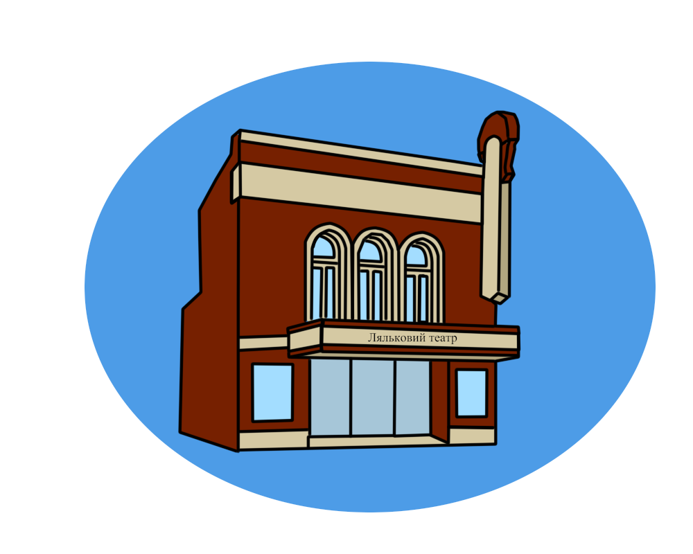
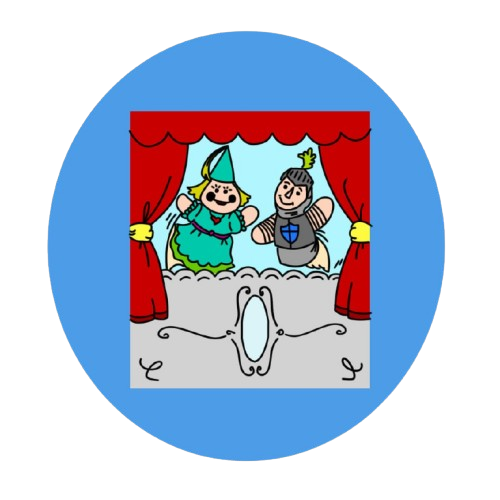
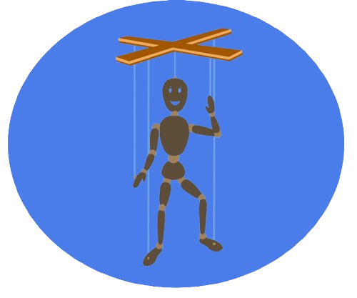

Вінницький обласний академічний театр ляльок є важливою культурною установою міста, що функціонує з 1937 року. Театр спеціалізується на постановках для дітей, де яскраві ляльки та казкові сюжети захоплюють маленьких глядачів. Репертуар театру включає класичні казки, сучасні п'єси та інтерпретації відомих літературних творів, що розвивають уяву та виховують важливі цінності. Вінницький ляльковий театр також активно бере участь у міжнародних фестивалях і гастролях, поширюючи українське лялькове мистецтво за межі країни.

Лялькова вистава — це особливий вид театрального мистецтва, де головними героями є ляльки, керовані акторами-лялькарями. Завдяки виразним образам, рухам та голосу акторів, ляльки "оживають" на сцені, передаючи емоції та розповідаючи історії. Лялькові вистави часто орієнтовані на дітей, але також можуть бути цікавими і для дорослих завдяки глибокому змісту та оригінальним постановкам. Кожна вистава має свою магію, де фантазія поєднується з мистецтвом лялькарства, створюючи унікальне театральне дійство.

Лялька — це іграшка або декоративний предмет, що зазвичай має вигляд людини чи тварини. Її використовують для гри, творчих виступів або в традиційних обрядах.